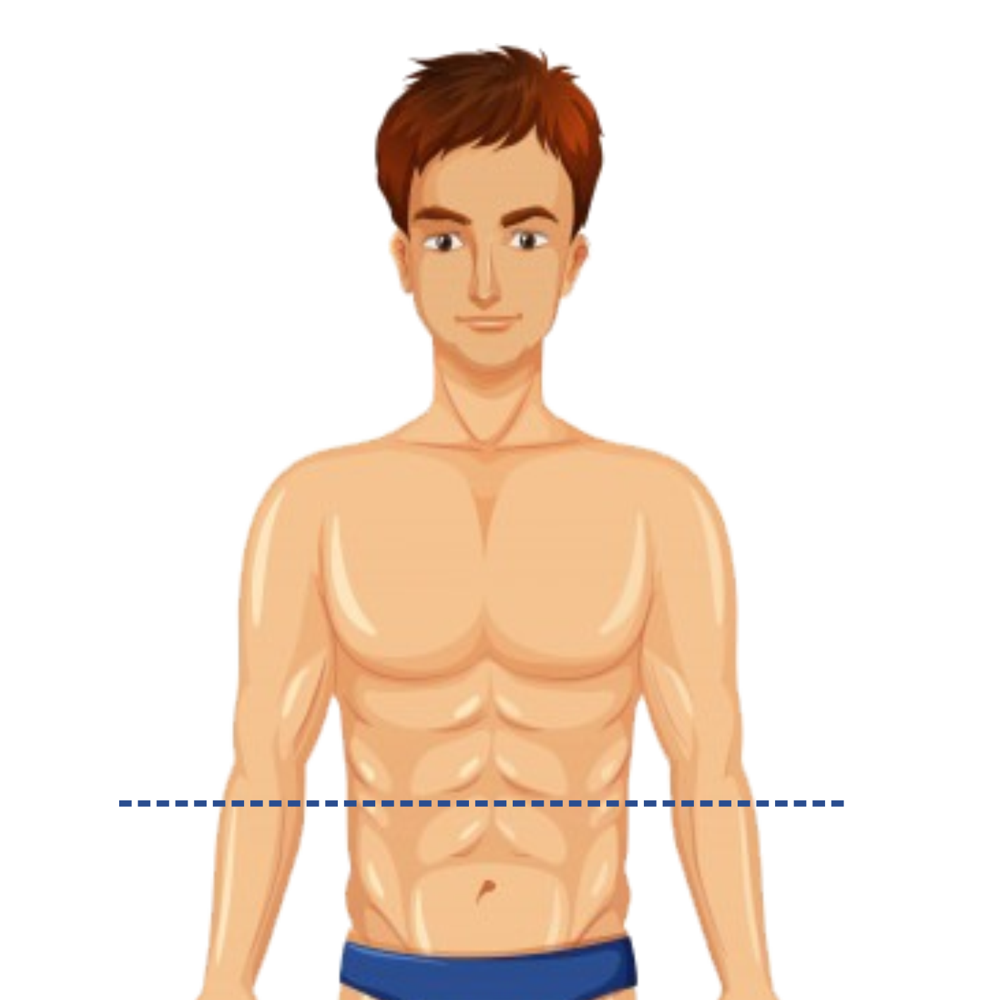

<!--
  Generated template for the AcAbdomenPage page.

  See http://ionicframework.com/docs/components/#navigation for more info on
  Ionic pages and navigation.
-->
<ion-header>

  <ion-navbar color="cinza1">
    <ion-title>Abdomen</ion-title>
  </ion-navbar>

</ion-header>


<ion-content>
  
  

  <ion-list>
    <h2>Medida do abdomen</h2>
    <ion-item><ion-input type="text" text-center  [(ngModel)]="abdomen.abdomen"></ion-input></ion-item>
  </ion-list>

  <button ion-button block color="amarelo1" (click)="continuar()">Continuar</button>
</ion-content>
